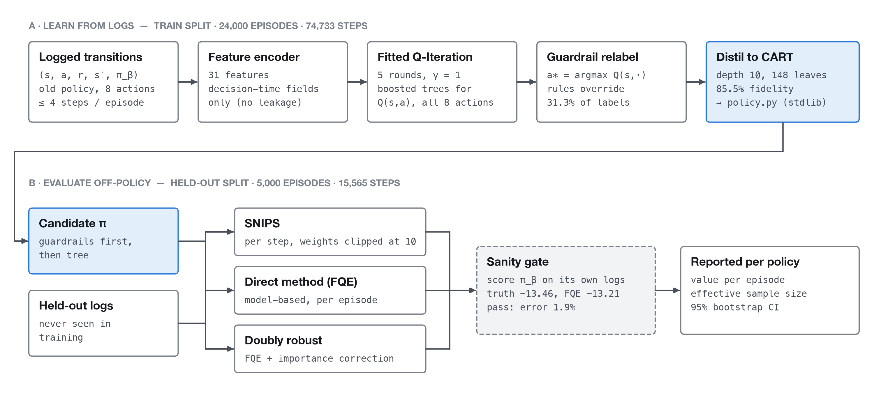
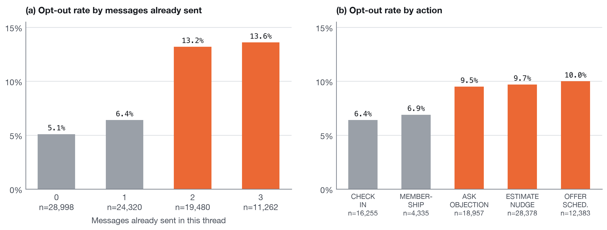
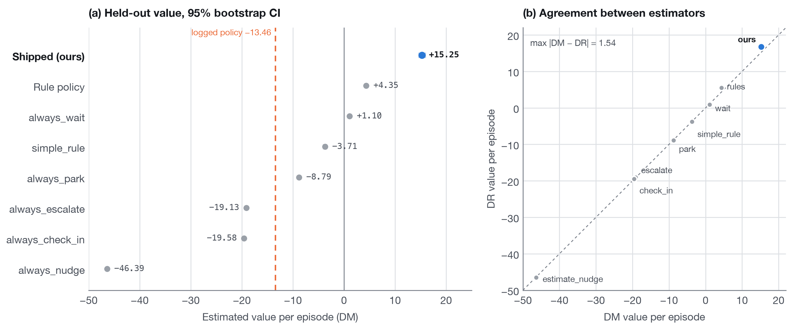
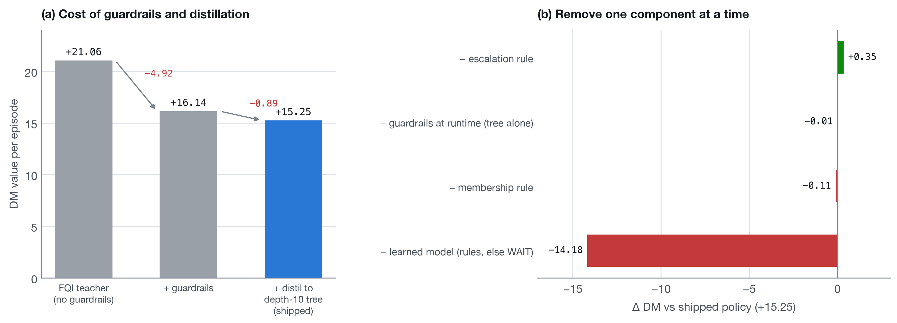
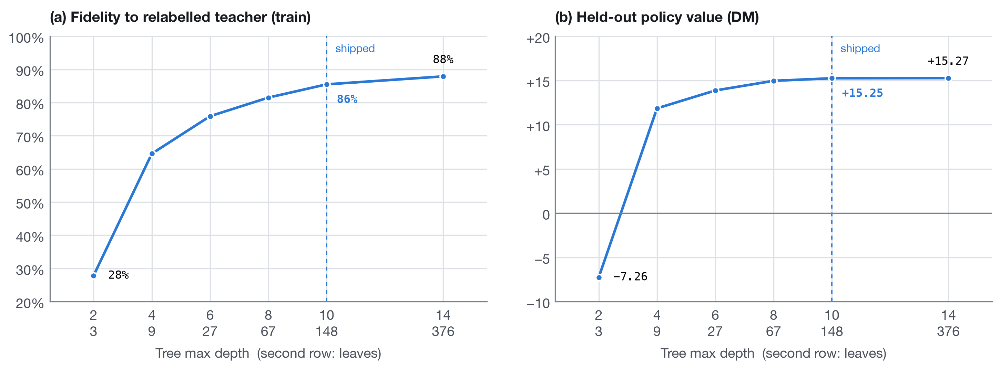
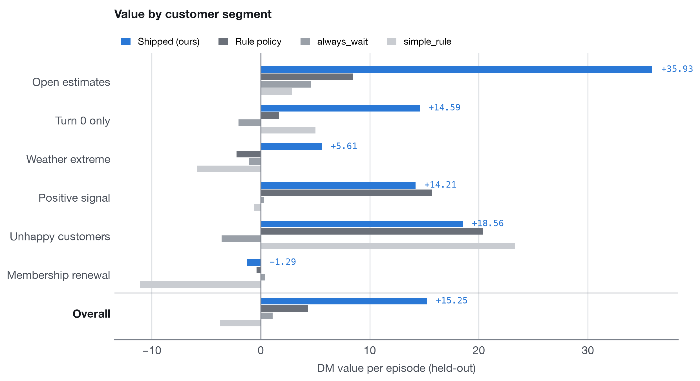
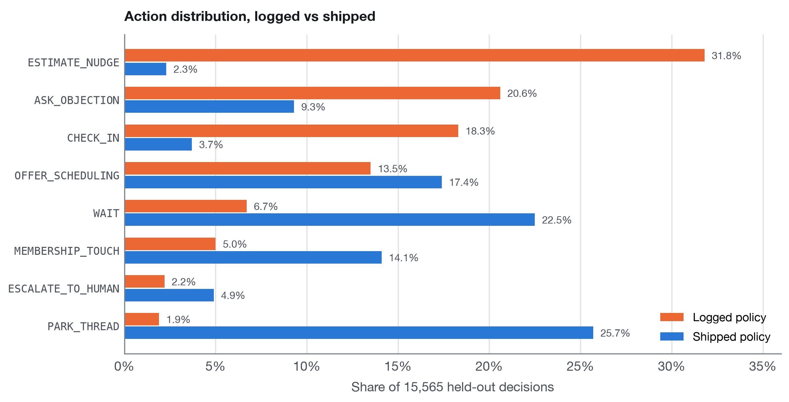

HVAC Follow-up Policy Optimization
Offline reinforcement learning on 74.7K logged steps — fitted Q-iteration distilled into an auditable depth-10 decision tree, checked by three off-policy estimators that first had to recover the old policy's known value.
A follow-up policy for HVAC contractors that decides when and how to contact a homeowner after a service visit: check in, nudge an open estimate, ask what the objection is, offer scheduling, touch membership, park the thread, or escalate to a human.
The hard constraint is that you cannot experiment on real customers. All you have are logs from an older policy, which only recorded outcomes for the actions it chose. Every claim about an unexplored action is model-based extrapolation, so the work is as much about honest evaluation as about the policy itself.

Why the default is silence

Opt-outs are 7.9% of logged steps at −62.6 each, more than half the value of a
sale (+116.8). So an average message starts at about −5.6 expected value before any
upside. That reframes the problem: the policy's job is to prove that speaking beats staying quiet.
It is why always_wait, doing literally nothing, scores +1.10 and beats the old policy's
−13.46.
Approach
- Fitted Q-Iteration (5 rounds, boosted trees) over 74,733 logged training steps from 24,000 episodes, using 31 features visible at decision time only. Everything is evaluated on 15,565 held-out steps the model never saw.
- Guardrail relabelling. Hard product rules override the model's greedy action
on 31.3% of labels: escalate whenever the customer is unhappy or
service_risk_score > 0.7. In the logs, escalation is the only action that pays when a customer is unhappy (+21.0; every outbound message loses money). - Distillation into a depth-10 decision tree (148 leaves, 85.5% agreement with the full model), exported as one dependency-free Python file that a domain expert can read.
Results

Seven baselines were compared on 5,000 held-out episodes. The shipped policy
scores +15.25 per episode (95% CI +14.6 to +16.0) against −13.46
for the old policy, a gain of +28.7 per thread. Doubly robust gives +16.79 and SNIPS +11.32. All
three estimators rank the learned policy first; the direct method and doubly robust agree on the
full ranking to within 1.54 per episode. SNIPS differs only on the order of
always_wait and simple_rule.
What each component costs and buys

The unconstrained FQI teacher scores +21.06. Guardrails cost 4.9 and distillation 0.9: that is the price of a policy that is auditable and rule-safe. Removing the learned model drops value by 14.2, while removing the runtime guardrails barely moves it, because the tree has already learned them.

Where it wins, and where it does not

The shipped policy is best overall and on 3 of 6 segments (open estimates, weather extremes, first touches). Most of the gain is on open estimates, +35.93 against +8.48 for hand-written rules. On unhappy customers every policy with the escalation rule scores between +18.6 and +23.3, and the starter rules score highest: the hard rule, not the learned model, is doing the work. Hand-written rules also edge it on positive signals, and doing nothing is best on membership renewal. Those are reported, not hidden.

The behaviour change is large: estimate nudges fall from 31.8% to 2.3% of decisions, and volume
shifts to waiting, parking stale threads and scheduling. Measured on the shipped policy, it is not
the behaviour you might guess. Only 27% of scheduling offers follow a positive
reply; most follow a stated objection (price, spouse or competitor).
ASK_OBJECTION is a proactive probe, with 93% of uses coming before the customer has
said anything. And every park comes from the hard rule, not the model.
What this evaluation cannot prove
- No counterfactuals. The old policy almost never waited on turn 0 of an open estimate, so the value of doing so is extrapolation, not measurement.
- Thin-data actions. Parking and escalation have the least logged support (297 and 350 rows), and the new policy uses both far more: parking goes from 1.9% to 25.7% of decisions. That is where the estimates are weakest.
- Pushing a booking on an objecting customer. Because most scheduling offers follow an objection, the likeliest real-world failure is an offer that reads as pushy. That is a cost the logs price only through opt-outs.
- Distribution shift. If the new policy changes customer behaviour, the logs no longer describe the world it operates in.
The rollout plan follows from those limits: 5% of traffic, with opt-out rate and escalation volume as the primary rollback triggers.